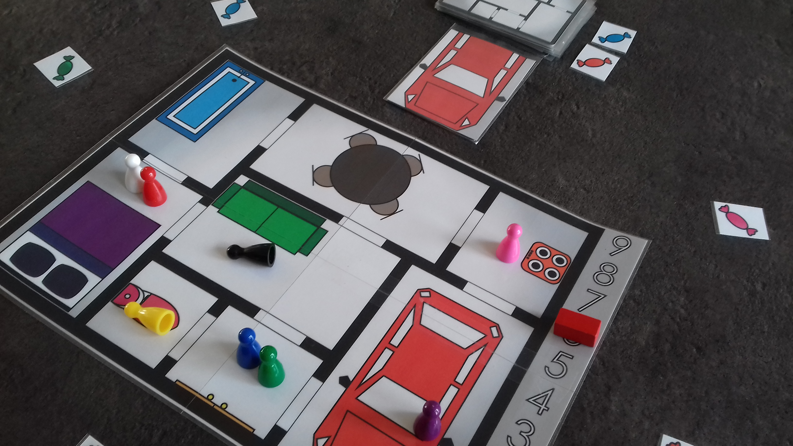
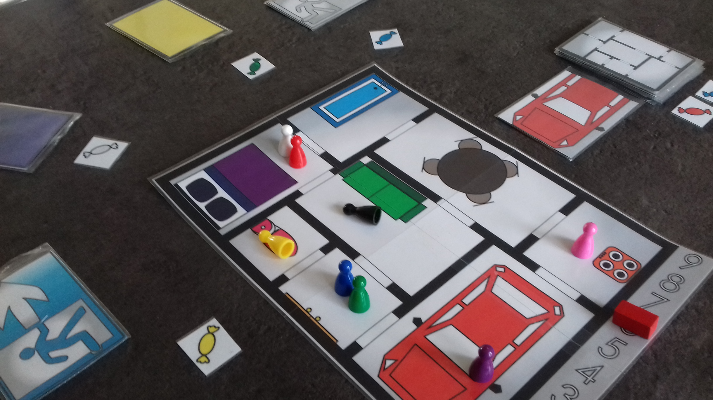
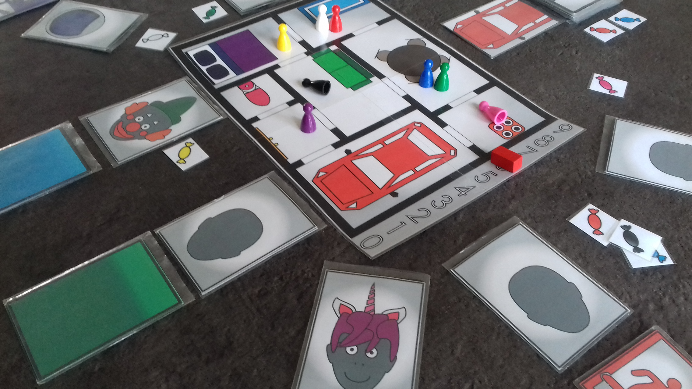
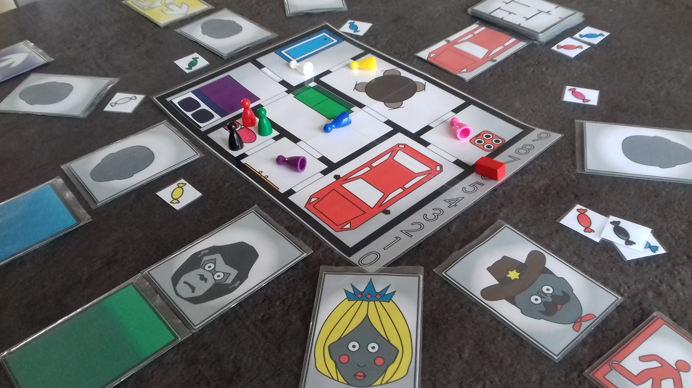

A partir de 5 ans De 2 à 9 joueurs Durée 10 à 20 minutes
Salut, moi c’est Cid et aujourd’hui c’est mon anniversaire ! Et tous mes copains sont venu déguiser dans ma maison, mais c’est bientôt fini… les parents des copains vont bientôt venir les chercher. Mais en attendant faisons une partie de Cid Glacer pour s’amuser !
Cid’s Home est un jeu évolutif, au départ il propose des règles de jeu simples, mais au fur et à mesure des partis, vous pouvez ajouter petit à petit du matériel qui rendra les règles de jeu plus complètes.
Commencer par jouer en Découverte, une fois ce mode assimilé essayé Initié, si celui-ci devient trop simple lancé vous dans Confirmé, et enfin pour ceux dont ces trois modes non plus de secret, aventuré vous en Expert!
A partir de 5 ans De 2 à 9 joueurs environ 10 minutes
Une partie de Cid glacé en un nombre de tours défini.
Cid essaye de toucher et Geler le plus de Copains possible en anticipant leurs déplacements à travers la maison.
Les Copains, eux essayent de Dégeler les autres Copains Gelés et d’échapper à Cid en essayant de deviner où il va aller.
A partir de 6 ans De 2 à 9 joueurs environ 10 minutes
Chaque Copain a en plus une carte Courir permettant de choisir leurs déplacements en même temps que tous les autres, afin de ne pas s’influencer mutuellement.
A partir de 7 ans De 2 à 9 joueurs environ 15 minutes
En plus chaque Copain a une carte Rôle, qu’il gardera secrète jusqu’à qu’il décide de l’utiliser à un moment précis et active un effet spécial unique.
A partir de 8 ans De 4 à 9 joueurs environ 20 minutes
Les Copains auront un Rôle secret, parmi eux se cachent Le Gorille et La Princesse, venant tout chamboulé.
Le Gorille devra découvrir qui est la Princesse pour gagner.
Mais attention, le fait d’utiliser les effets des rôles de base va aider Le Gorille à trouver La Princesse!